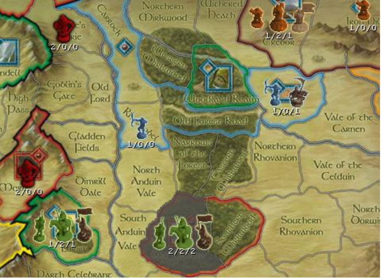
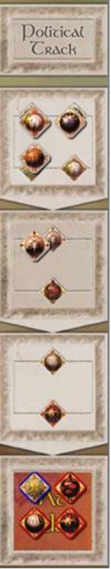

Screenshots are taken from the War of the Ring Online Client and the numbers under armies are in the format REGULARS/ELITES/LEADERS.
The Woodland Realm is exposed because the shortest route to the stronghold for the army in Eagles’ Eyrie is clear.
 